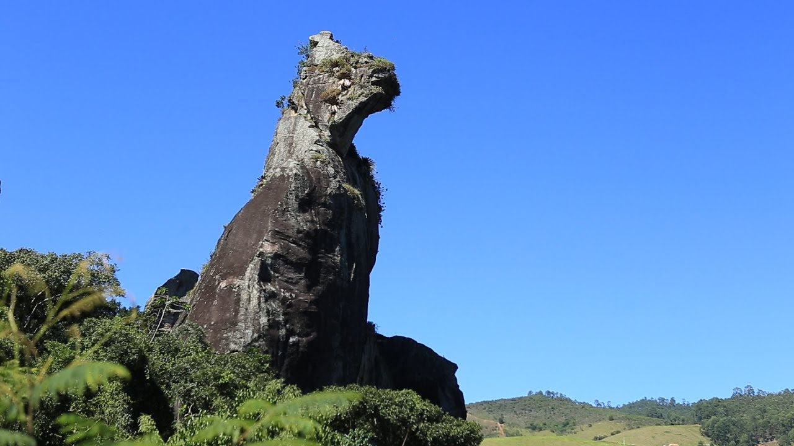
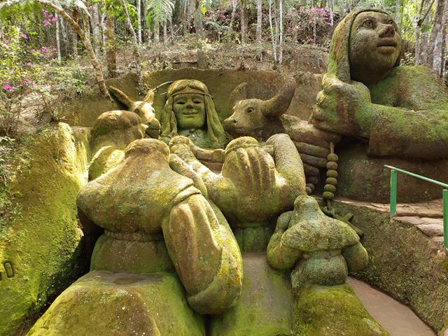
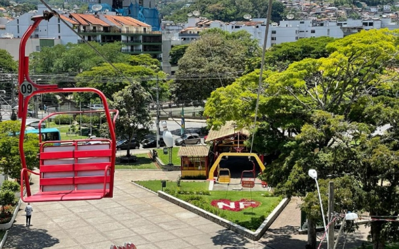
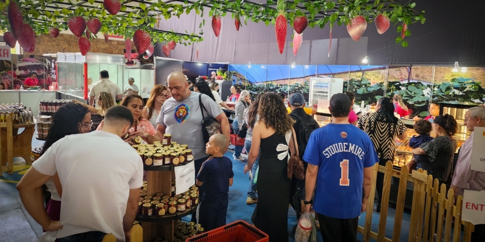

Pedra do Cão Sentado - A Pedra do Cão Sentado ergue-se majestosamente a mais de 1.100 metros de altitude, sendo um bloco de gnaisse com 111 metros de altura moldado exclusivamente pela erosão natural ao longo de milhares de anos. Oficializada como Unidade de Conservação e Monumento Natural Municipal, ela é cercada por uma rica biodiversidade da Mata Atlântica e por um impressionante conjunto de cavernas, fendas e imensos blocos de rocha sobrepostos que formam o labirinto geológico de Furnas do Catete. Localmente, sua silhueta deu origem à famosa lenda de um cão fiel pertencente a um guerreiro indígena da região; após seu dono partir para as batalhas e não retornar, o animal teria subido ao topo da montanha para uivar de saudade até ser eternizado em pedra por um raio ao amanhecer. Por estar inserido na dinâmica natural da Região Serrana, o monumento e suas encostas passam por monitoramentos preventivos de estabilidade, mas o foco do parque se mantém firme na preservação desse gigante ecológico e na experiência contemplativa dos visitantes.
Veja mais
Jardim do Nêgo - O Jardim do Nêgo, localizado no circuito de Campo do Coelho, é um dos pontos turísticos mais impactantes e singulares de Nova Friburgo. Trata-se de um museu a céu aberto onde o artista plástico Geraldo Simplício (o Nêgo) esculpe imensas e expressivas figuras humanas diretamente nos barrancos de argila e terra encravados na Mata Atlântica. As esculturas monumentais parecem brotar da própria natureza e se transformam constantemente com o nascimento de musgos e plantas ao longo do tempo. O passeio proporciona uma experiência artística e contemplativa inesquecível, onde a criatividade humana e a força da terra se fundem de maneira mágica.
Veja mais
Teleférico - O Teleférico de Nova Friburgo é um dos maiores do país e uma das atrações mais tradicionais da cidade. Partindo da charmosa Praça do Suspiro, o passeio nas famosas cadeirinhas coloridas cruza a copa das árvores em um trajeto que revela uma das vistas panorâmicas mais bonitas do centro urbano friburguense. O percurso é dividido em dois estágios: o primeiro desembarca no Morro da Cruz, onde os visitantes encontram um mirante espetacular, uma pista de boliche e um charmoso polo de artesanato; o segundo estágio leva até o topo, um espaço perfeito para relaxar e registrar fotos inesquecíveis da paisagem serrana.
Veja maisNova Friburgo, carinhosamente conhecida como a "Suíça Brasileira", é um charmoso refúgio serrano no estado do Rio de Janeiro que encanta por seu clima ameno, paisagens montanhosas deslumbrantes e rica herança histórica cultural. Fundada pela forte colonização suíça e alemã no século XIX, a cidade preserva essa influência em sua arquitetura de estilo europeu e em sua culinária afetiva, que atrai turistas em busca de fondues, chocolates artesanais e cervejas locais. Além de ser um polo nacional de moda íntima e um grande produtor de flores, o município é um verdadeiro paraíso para o ecoturismo, abrigando cartões-postais como o Parque Estadual dos Três Picos e a imponente Pedra do Cão Sentado, ideais para quem busca tranquilidade ou aventura junto à natureza.

Se você quer viver a experiência gastronômica definitiva em Nova Friburgo, programe-se para a nossa famosa Festa do Morango com Chocolate. Celebrada anualmente (geralmente entre agosto e outubro), a festa transforma a cidade no paraíso dos amantes de doces. O evento celebra a colheita dos morangos frescos cultivados na região — reconhecida pela altíssima qualidade de suas frutas — combinando-os com a criatividade de nossos chocolatiers artesanais. São dezenas de estandes oferecendo desde as clássicas coxinhas de morango com brigadeiro e fondues expressos até tortas finas, geleias exóticas e bombons recheados, tudo isso embalado por shows ao vivo, artesanato local e uma atmosfera familiar inesquecível.
Veja mais